Neurocognitive Impacts of AI-Generated versus Human-Generated Content: An Experimental Study of Cognitive Load and Critical Thinking
Video
About
My inspiration
This research studied how people respond to AI-generated content compared to human-made content, with a focus on cognitive load, creativity, critical thinking, and engagement. Rather than approaching the topic as an opinion about whether AI is "good" or "bad", I wanted to design an experiment that could measure how different types of content affect the way people think and process information.
Introduction
The study was conducted with 40+ GDPR-consented participants. Each participant was exposed to both human-generated and AI-generated content in succession. During this process, I measured not only what they reported afterwards, but also how their behaviour changed while they were processing the content.
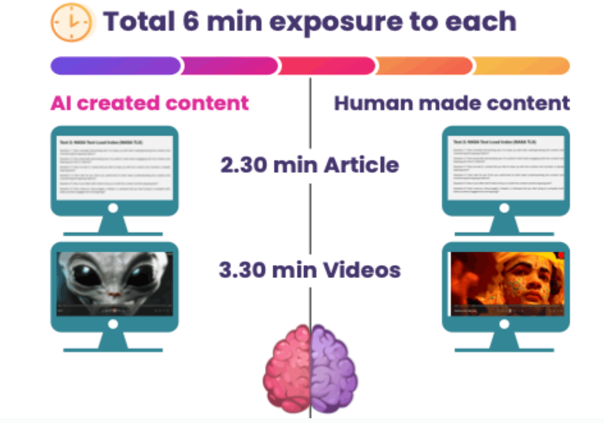
Method
A key part of the experiment was the BBC micro:bit Foot Tapping Test, which I used as a secondary cognitive interference task. The idea was simple: while participants engaged with the content, they also performed a repeated foot-tapping task. If a piece of content placed more mental demand on them, their tapping pattern could become less consistent. The micro:bit recorded tapping acceleration data in real time, giving a behavioural signal of how much cognitive interference was happening during the task.
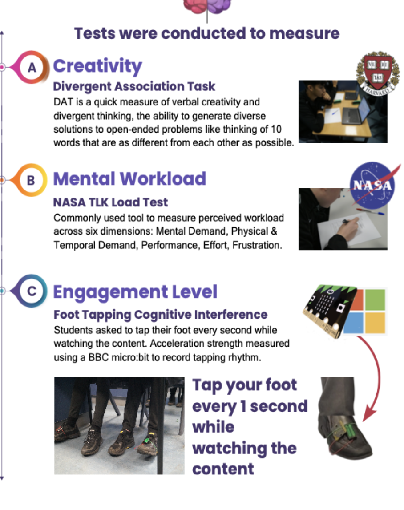
After exposure to each content type, participants completed the NASA Task Load Index, a widely used tool for measuring perceived mental workload. They also completed the Harvard Divergent Association Task, which measures verbal creativity by asking participants to generate words that are as different from each other as possible. Together, these tests allowed the study to compare mental effort, creative performance, and engagement after reading human-made and AI-generated material.
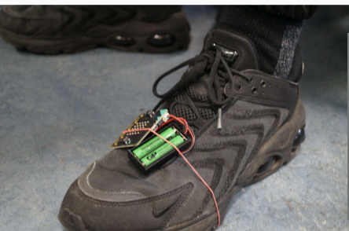
Results
The results showed a clear difference between the two conditions. Human-generated content was linked with stronger creativity scores, with more participants performing better after reading human-made material than after reading AI-generated content. AI-generated content produced higher reported cognitive load, and the foot-tapping data showed greater cognitive interference through less consistent tapping patterns.
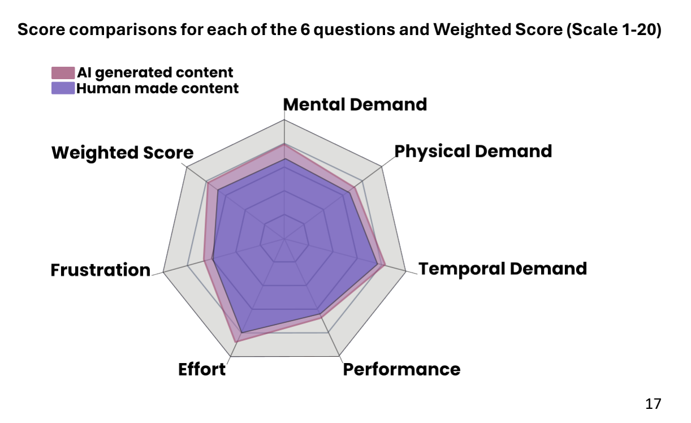
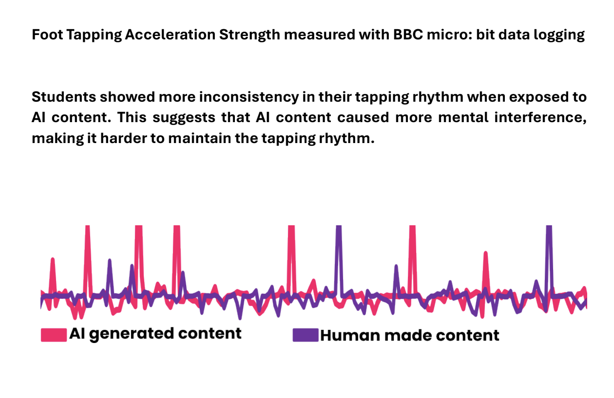
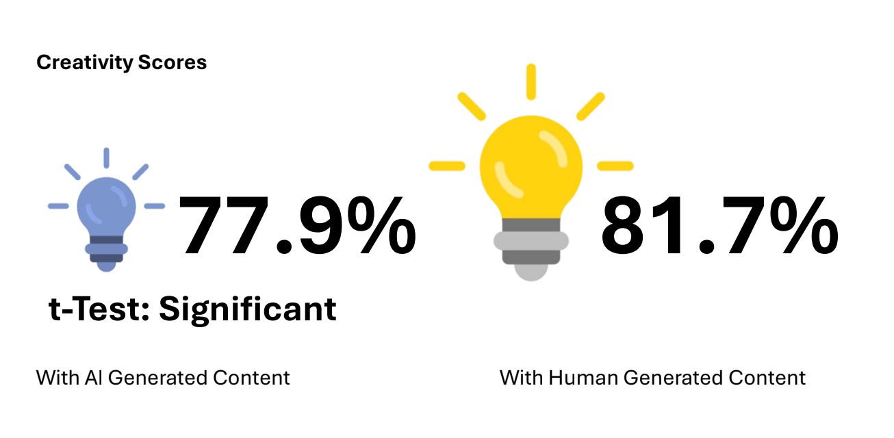
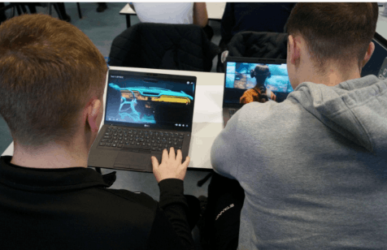
Recognition pathway
The research was later refined through the Leaf Fellowship under the mentorship of Mishka Nemes from The Alan Turing Institute, UK, and later received national recognition at the Stripe Young Scientist Exhibition. Overall, the study suggests that AI-generated content may place greater cognitive demands on learners while also influencing creativity and engagement.
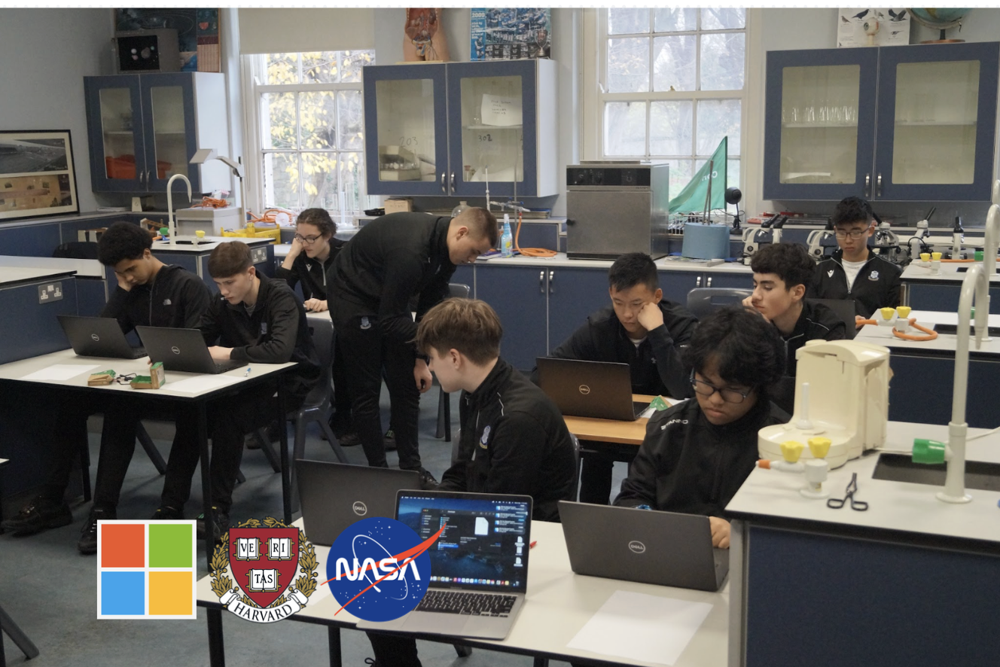
Recognition
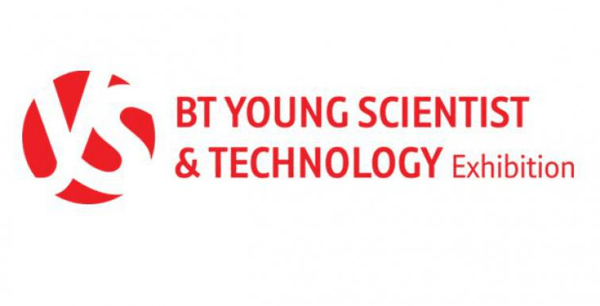
- Received the Category Award at the Stripe Young Scientist and Technologists Exhibition.
- Received the Williams Lea Award at the Stripe Young Scientist and Technologists Exhibition.
- Invited to speak as a panelist at Google Ireland Growing Up In Digital Age 2025 at the Google HQ.
- Invited to speak at Trinity College Dublin Waltons Club Explorers Batch.
- Refined the research further under guidance of Mishka Nemes, The Alan Turing Institute, UK.
- Published under the Teens in Health Journal.
Gallery
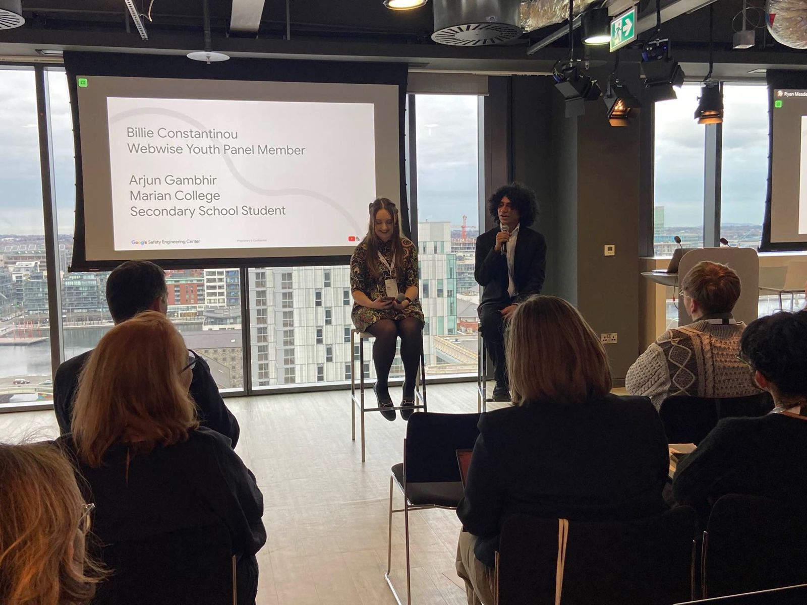
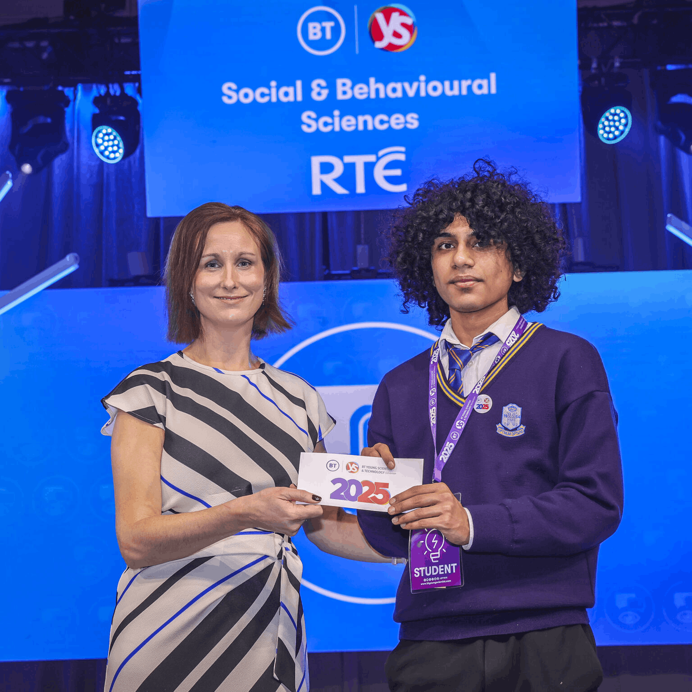
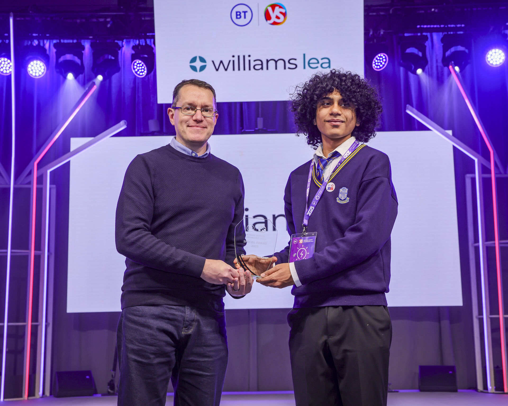

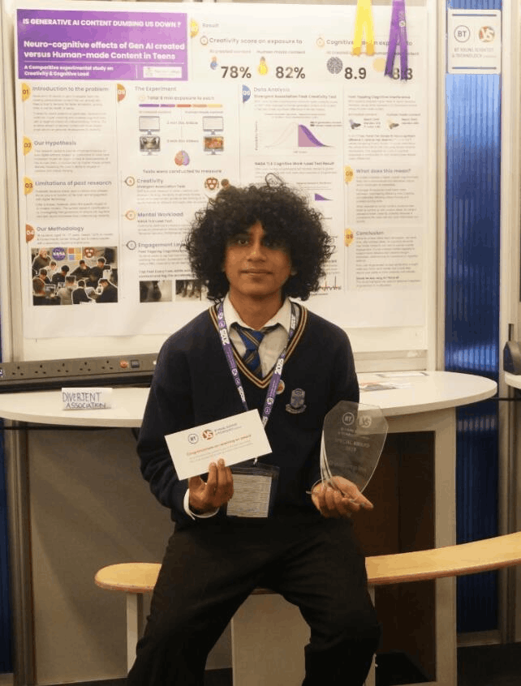